IDA Pro
IDB快照
在使用IDA修改二进制文件之前，可以为最初的IDB做一个快照，通过快照功能可以迅速还原某个时间点的IDB状态。
快捷键：Ctrl+Shift+W，唤起IDB快照窗口
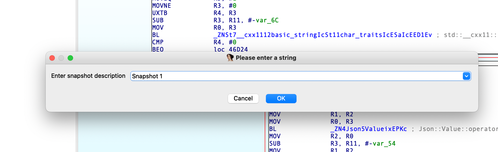
快捷键：Ctrl+Shift+T，唤出IDB快照弹窗，可以选择快照以恢复
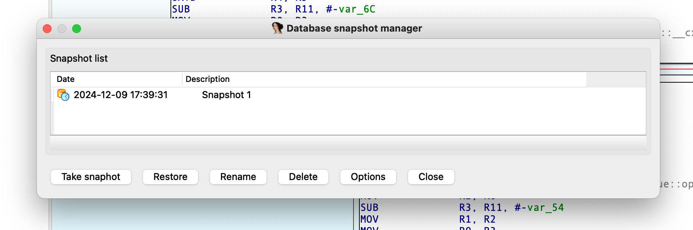
IDB设置关键位置标记
在逆向过程中可以为关键的判断或者指令设置标记，方便查找。
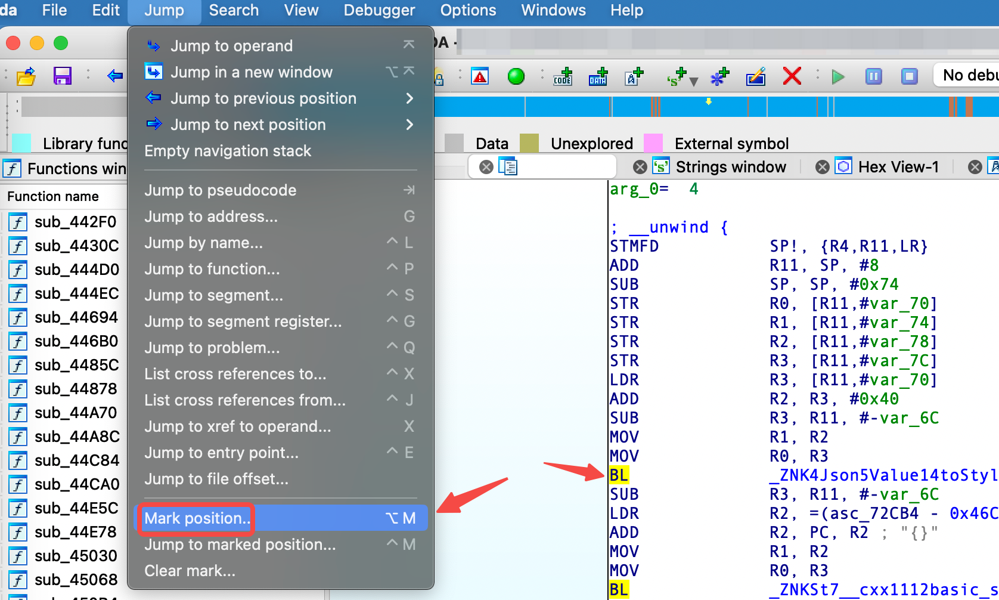
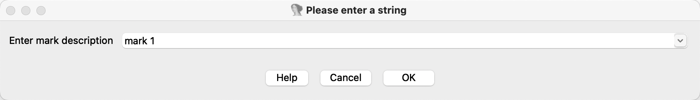
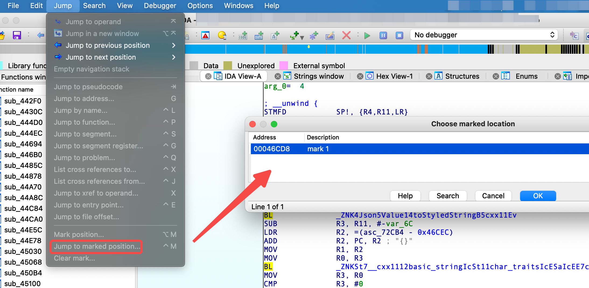
结构体
通过头文件创建结构体
在逆向过程中可以通过定义结构体来恢复对结构体的引用代码，减少逆向难度；
快捷键：Shift+F1，打开本地类型窗口
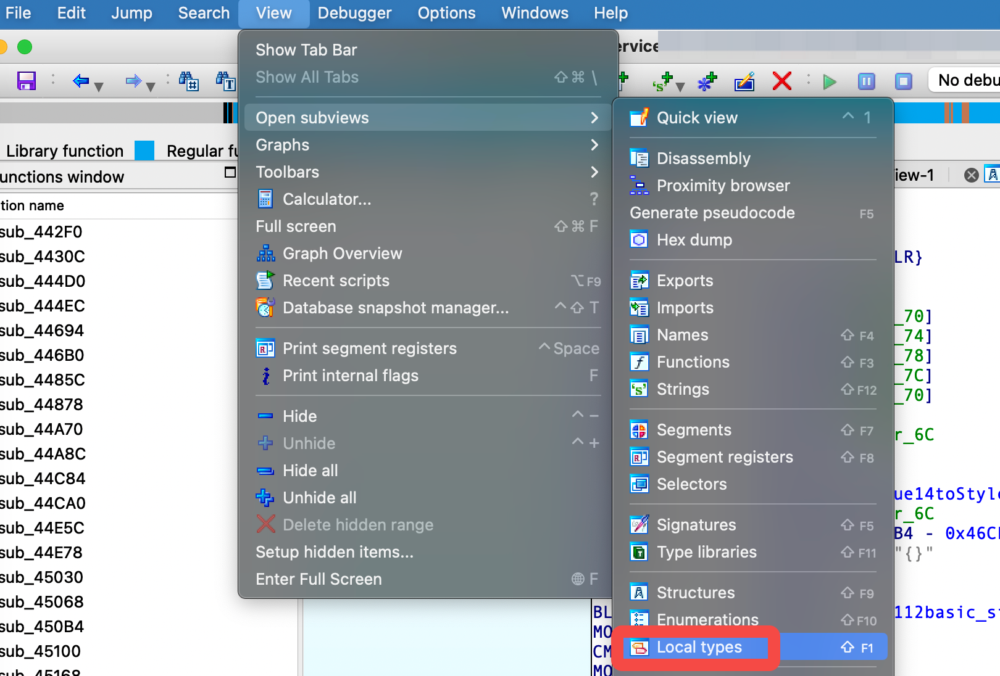
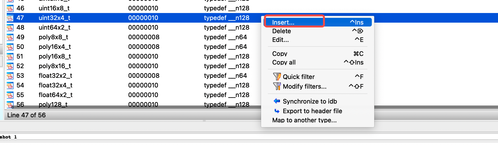
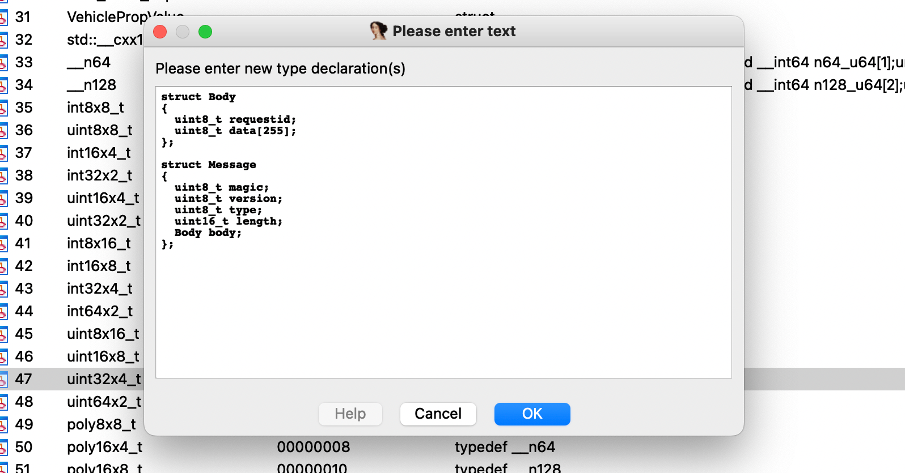
双击导入结构体：
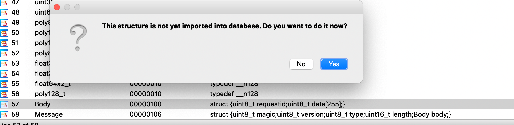
在函数中修改参数/变量的类型即可使用自定义的结构体：
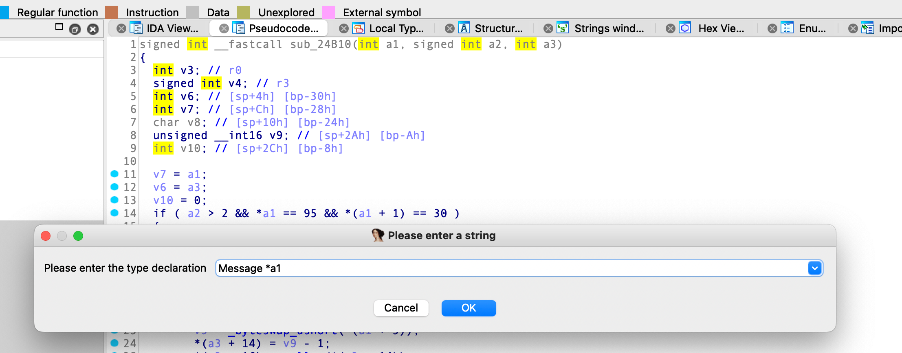
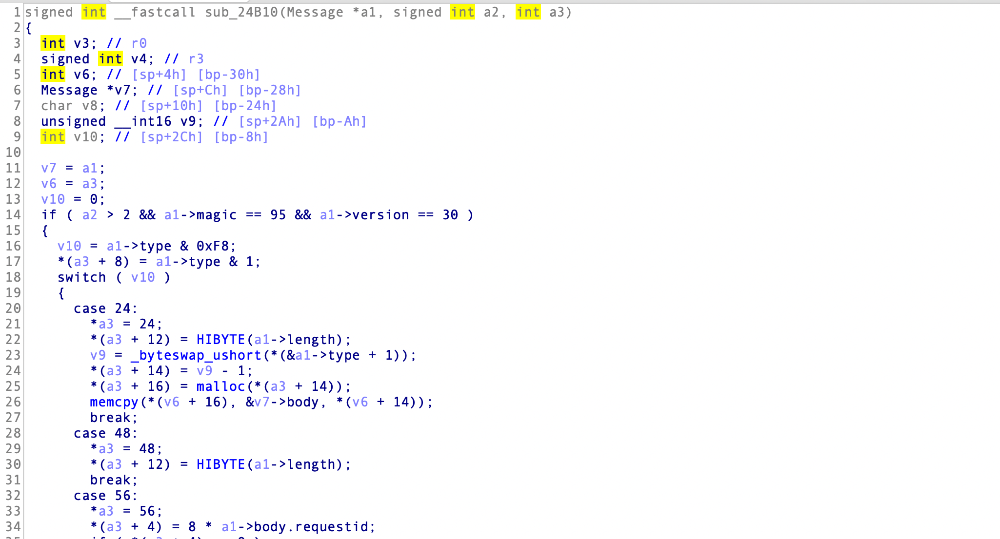
定义结构体数组
首先要定义结构体Test，示例中定义了3个大小为1 byte的成员，结构体整体大小为3字节：
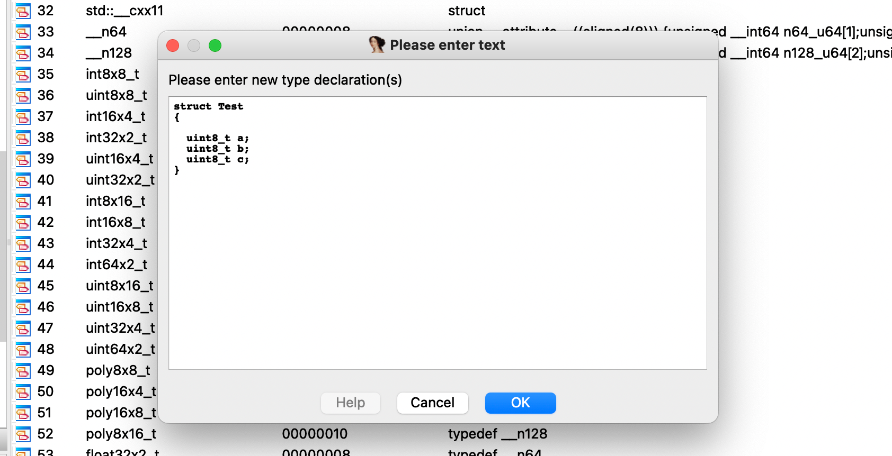
选择要定义结构体数组的首地址，按下快捷键 ALT+Q，将结构体数组的第一个元素定义为结构体：
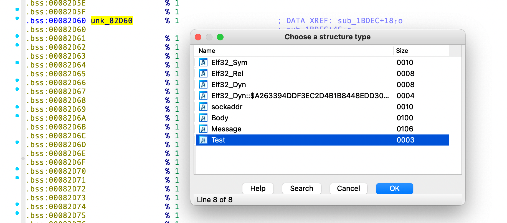
按下快捷键 shift+* 或者选择Array定义数组，数组元素默认为Test结构体：
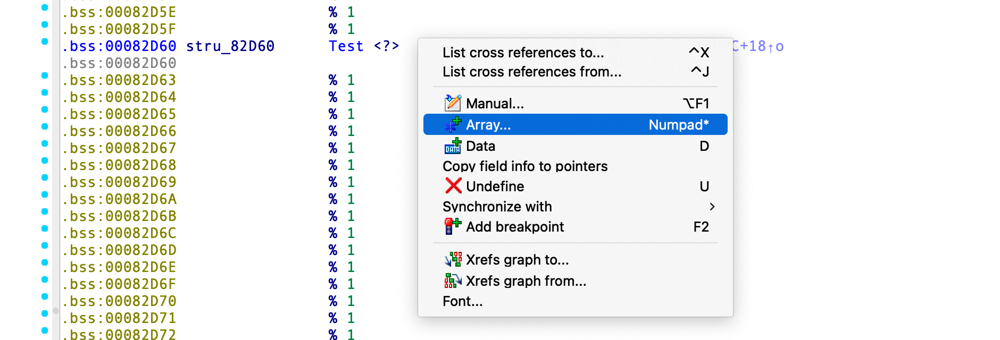
设置数组大小：
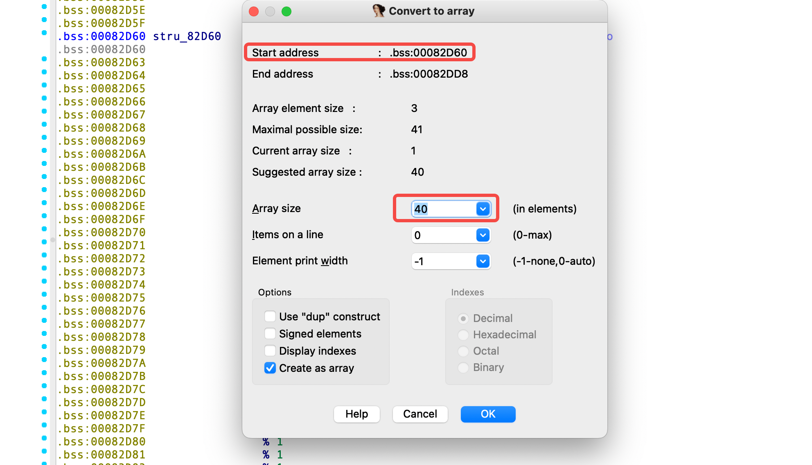
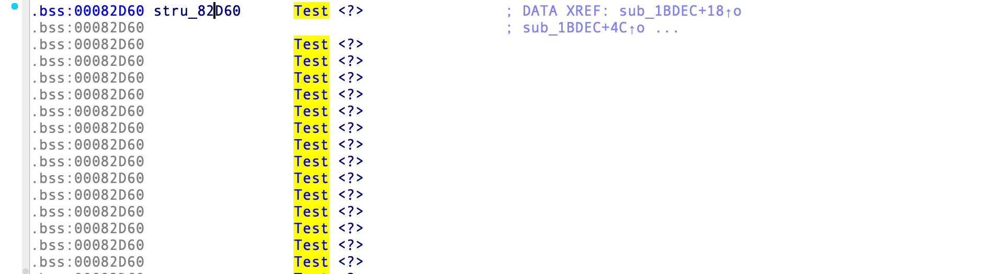
导入标准结构体
除了手动创建结构体外，还可以导入 IDA 中已有的结构体，在 Structures 中创建结构体时，按 I 之后，选择已有的结构体即可。
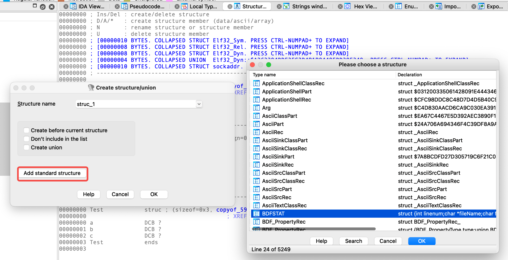
Frida
hook Android app
1
2
3
4
5
6
7
8
9
10
11
12
13
14
15
16
17
18
19
20
21
22
23
24
25
26
27
28
29
30
31
32
33
34
35
36
37
38
39
40
41
42
43
44
45
46
47
48
49
50
51
52
53
54
55
56
57
58
59
60
61
62
63
64
65
66
67
68
69
70
71
72
73
74
75
76
| function getClassWrapper(klass) {
for (var loader of Java.enumerateClassLoadersSync()) {
try {
loader.findClass(klass);
return Java.ClassFactory.get(loader).use(klass);
} catch (e) {
}
}
throw new Error(`${klass} not found`);
}
function getClassInstance(klass) {
var classInstance;
try {
Java.choose(klass, {
onMatch: function (instance) {
classInstance = instance;
},
onComplete: function () {
}
});
return classInstance;
} catch (e) {
console.log(`${klass} instance not found`)
}
}
function setXXXState(state) {
let OtaStateMachineMap_REMOTE = getClassWrapper(`com.xxx.xxx.xxx$OtaStateMachineREMOTE`);
let REMOTE = OtaStateMachineMap_GET_META_REMOTE.$new(`OtaStateMachineMap.REMOTE`, 11);
console.log(REMOTE);
let FSMContext = getClassInstance("statemap.FSMContext")
if (FSMContext) {
console.log(FSMContext)
FSMContext.setState(REMOTE);
}
}
function printDebugLog(msg) {
let mLogUtils = getClassWrapper("com.xxx.xxx.utils.LogUtils").$new();
let classtag = "HookPrint";
mLogUtils["debug"](classtag, msg);
}
function setStateLog() {
let mFSMContext = getClassWrapper("statemap.FSMContext")
mFSMContext["setState"].implementation = function (state) {
console.log(`FSMContext.setState is called: state=${state}`);
this["setState"](state);
printFotaDebugLog(`setCurrentState: ${state}`);
};
}
function main() {
try {
setStateLog();
} catch (e) {
console.error("Error in main processing:", e);
}
}
setImmediate(function() {
Java.perform(function() {
main();
});
});
|
hook二进制
1
2
3
4
5
6
7
8
9
10
11
12
13
14
15
16
17
18
19
20
21
22
23
24
25
26
27
28
29
30
31
32
33
34
35
36
37
38
39
40
41
42
43
44
45
46
47
48
49
50
51
52
53
54
55
56
57
58
59
60
61
62
63
64
65
66
67
68
69
70
71
72
| var moduleName = "service";
var baseAddress = Module.findBaseAddress(moduleName);
if (baseAddress) {
console.log(moduleName + " base address is: " + baseAddress);
} else {
console.log("Error: Cannot find " + moduleName);
}
var recv_fun_addr = '0x24B10';
var res_fun_addr = '0x24640';
function recvFunHook() {
if (baseAddress !== null) {
var targetAddress = baseAddress.add(recv_fun_addr);
Interceptor.attach(targetAddress, {
onEnter: function (args) {
this.args0 = args[0];
this.args1 = args[1];
this.args2 = args[2];
this.args0 = args[3];
this.args1 = args[4];
this.args2 = args[5];
var memoryData = Memory.readByteArray(this.args0, 0x140);
console.log(memoryData);
var data = new Uint8Array(memoryData);
if (data[0] == 0x5f && data[1] == 0x1e) {
if (data[2] == 0x40) {
var length = (data[3] << 8) | data[4];
var memoryData = Memory.readByteArray(this.args0.add(0x6), length);
console.log('Recv Cloud Ctrl Data:\n');
console.log(memoryData);
}
}
},
onLeave: function (retval) {
}
});
} else {
console.log('Cannot find baseAddress: ' + baseAddress);
}
}
function resFunHook() {
if (baseAddress !== null) {
var targetAddress = baseAddress.add(res_fun_addr);
Interceptor.attach(targetAddress, {
onEnter: function (args) {
this.args0 = args[0];
this.args1 = args[1];
this.args2 = args[2];
},
onLeave: function (retval) {
var memoryData = Memory.readByteArray(this.args0, 0x140);
console.log('Veh Response Data:\n');
console.log(memoryData);
}
});
} else {
console.log('Cannot find baseAddress: ' + baseAddress);
}
}
recvFunHook();
resFunHook();
|
Git
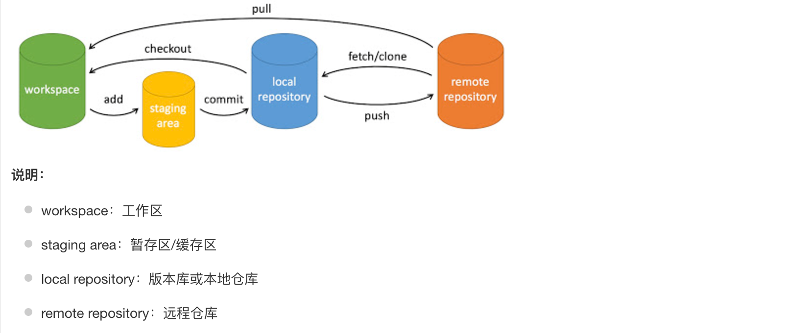
1
2
3
4
5
6
7
| git init // 初始化仓库
git clone https://xxx.com/xxx.git // 下载项目
git add . // 添加文件到暂存区
git checkout // 切换分支
git pull // 下载远程代码并合并
git push // 上传远程代码并合并
git commit -m "xxx" // 提交暂存区到本地仓库
|
回退版本
整个项目回退
1
2
| git reflog // 列出所有提交记录
git reset --hard <commit-hash> // 恢复到某个commit，将覆盖本地当前的所有更改
|
某个文件回退之前的版本
1
| git restore --source=<commit-id> <file-path>
|
在恢复文件到旧版本后，需要将这些更改重新提交到仓库中。
取消commit
取消最近的 commit，但同时保留工作目录中的修改
将 HEAD 移动到上一个 commit，但修改会保留在暂存区中。
取消最近的 commit，并将修改放回工作目录
1
| git reset --mixed HEAD~1
|
撤销commit并将改动放回工作目录中，但不会保留在暂存区。
彻底取消最近的 commit，并删除所有更改
执行后无法恢复更改。
取消某个历史 commit，且不影响后续的 commit
1
| git revert <commit-hash>
|
git revert会创建一个新的 commit 来撤销指定的更改。
贮藏与清理
https://git-scm.com/book/zh/v2/Git-%E5%B7%A5%E5%85%B7-%E8%B4%AE%E8%97%8F%E4%B8%8E%E6%B8%85%E7%90%86
开发过程中，在一个分支开发新的功能，还没开发完成，此时有反馈需要处理紧急bug，但是新功能开发了一半又不想提交，分支有改变时不提交又不能切换分支。可以使用 git stash 保存当前工作进度，stash 会将暂存区和工作区的改动保存到一个栈中；执行完 git stash 命令后，再运行 git status 命令，就会发现当前是一个干净的工作区，没有任何改动。
| 命令名 |
作用 |
| git stash |
隐藏当前的工作现场, 此时, git status的结果是 clean |
| git stash list |
查看所有隐藏, 每一行的冒号前面的字符串就是标识此隐藏的id |
| git stash apply |
重新显示标识为 id 的隐藏 |
| git stash drop |
git apply恢复隐藏后, 需要手动删除 list 列表中的记录 |
| git stash pop |
恢复最新的进度到工作区 |
| git stash pop stash@[stash_id] |
恢复指定的进度到工作区 |
| git stash clear |
清空暂存区的所有stash |